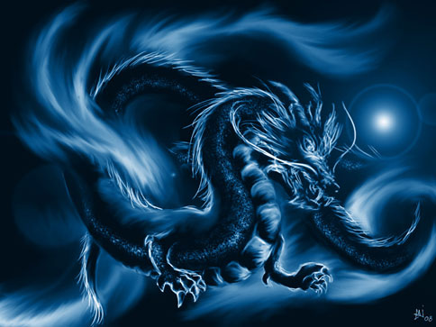
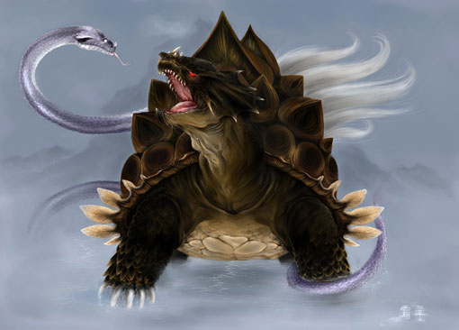

Guardian Stories
Click any guardian from the Animation page to jump to the matching story section here.
The Azure Dragon (East · Spring)
The Azure Dragon is the guardian of the East. In traditional star maps, the seven eastern mansions form a dragon-like pattern in the night sky. It aligns with spring and the element of wood, representing growth, vitality, and renewal.
Unlike Western dragons, Chinese dragons are typically viewed as protective and auspicious. The Azure Dragon is associated with rain and agriculture — a force that “activates” life after winter and signals seasonal rebirth.
Vermilion Bird (South · Summer)

The Vermilion Bird rules the South and represents summer. It is often depicted as a radiant red bird with elegant wings and a flowing tail, connected to the element of fire.
The Vermilion Bird symbolizes vitality, passion, ceremony, and prosperity — often compared to phoenix-like imagery, but rooted in a distinct Chinese cosmic system tied to direction and seasonal energy.
White Tiger (West · Autumn)

The White Tiger guards the West and corresponds to autumn. It aligns with the element of metal, representing justice, discipline, and righteous strength.
In many traditions, the White Tiger is a spiritual protector — a symbol used to ward off evil and uphold order, often appearing in art and funerary contexts as a defender of cosmic balance.
Black Tortoise (North · Winter)
The Black Tortoise (often shown entwined with a serpent) represents the North and winter. It aligns with the element of water, connected to wisdom, endurance, and protection.
The tortoise embodies stability and longevity; the serpent adds adaptability and movement. Together, they symbolize resilience — surviving harsh seasons and maintaining balance under pressure.